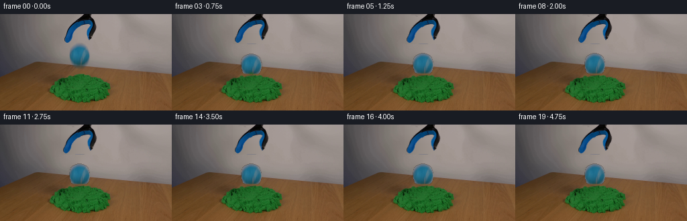
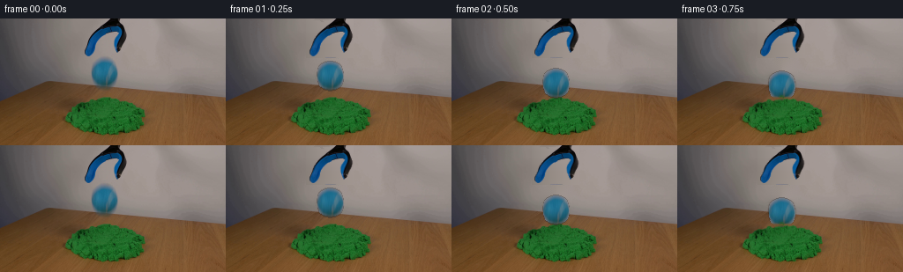

← 本轮 smoke 总览traex/DeepSeek-V4.1-Flash · 0018
text · 256×144 · 4.0 FPS · 20 帧 · 状态 complete · 输出 tokens 50849
原始任务Static locked-off single-shot with fixed frame throughout filmed with constant framerate in real-time. The scene shows a realistic scientific demonstration. The scene only contains the described setup and actions. The green kinetic sand is located on a wooden table, and the blue-black grabber tool is suspended over it. The blue-black grabber tool releases the blue tennis ball above a pile of green kinetic sand.
当前保存结果
已保存候选与代码修改
这里按时间展示外部捕获的候选，每份均可单独播放。保存新版本不等于完成视觉检查；下方工具证据记录实际看过的图。
候选 01 · 2026-11-08T20:46:33.471728+00:00 · 点开播放与检查图
inspection.png

transition_check.png

代码变化
--- 上一保存版本
+++ 本次保存版本
@@ -0,0 +1,385 @@
+from pathlib import Path
+
+import cv2
+import numpy as np
+from PIL import Image
+from scipy import ndimage
+
+import artifact_io
+
+
+ROOT = Path(__file__).resolve().parent
+WIDTH, HEIGHT = 256, 144
+N_FRAMES, FPS = 20, 4
+
+BALL_CX, BALL_CY = 118.1, 61.4
+BALL_R = 15.65
+CONTACT_Y = 89.0
+IMPACT_T = 0.55
+
+
+def smoothstep(edge0, edge1, x):
+ x = np.clip((x - edge0) / (edge1 - edge0), 0.0, 1.0)
+ return x * x * (3.0 - 2.0 * x)
+
+
+def row_polynomial_fill(image, mask, sample_xs):
+ """Fill a region from neighboring pixels, one row at a time."""
+ result = image.astype(np.float32).copy()
+ sample_xs = np.asarray(sample_xs, dtype=np.int32)
+ for y in range(mask.shape[0]):
+ xs = np.flatnonzero(mask[y])
+ if not len(xs):
+ continue
+ clean_xs = sample_xs[~mask[y, sample_xs]]
+ if len(clean_xs) < 4:
+ continue
+ colors = result[y, clean_xs].astype(np.float64)
+ degree = 3 if len(clean_xs) >= 5 else 2
+ coeffs = [np.polyfit(clean_xs, colors[:, channel], degree) for channel in range(3)]
+ for channel in range(3):
+ result[y, xs, channel] = np.polyval(coeffs[channel], xs)
+ return np.clip(result, 0, 255).astype(np.uint8)
+
+
+def build_clean_plate(source):
+ """Reconstruct the wall/table hidden by the tool and the suspended ball."""
+ clean = source.copy()
+
+ tool_mask = np.zeros((HEIGHT, WIDTH), dtype=bool)
+ tool_mask[0:45, 91:145] = True
+ sample_xs = np.r_[np.arange(50, 91, 2), np.arange(145, 191, 2)]
+ clean = row_polynomial_fill(clean, tool_mask, sample_xs)
+
+ yy, xx = np.mgrid[0:HEIGHT, 0:WIDTH]
+ ball_mask = ((xx - BALL_CX) ** 2 + (yy - BALL_CY) ** 2) <= (BALL_R + 3.0) ** 2
+ inpaint_mask = (ball_mask.astype(np.uint8) * 255)
+ clean = cv2.inpaint(clean, inpaint_mask, 4.0, cv2.INPAINT_TELEA)
+ return clean
+
+
+def build_tool_layer(source, clean):
+ """Extract the grabber as an RGBA layer so its jaws can open."""
+ y0, y1, x0, x1 = 0, 45, 88, 147
+ crop = source[y0:y1, x0:x1].astype(np.float32)
+ plate = clean[y0:y1, x0:x1].astype(np.float32)
+ diff = np.linalg.norm(crop - plate, axis=2)
+
+ mask = diff > 18.0
+ mask = ndimage.binary_closing(mask, structure=np.ones((2, 2)), iterations=1)
+ mask = ndimage.binary_fill_holes(mask)
+ # The top of the tool enters the frame, so retain its edge pixels.
+ mask[0:2] |= diff[0:2] > 11.0
+
+ alpha = ndimage.gaussian_filter(mask.astype(np.float32), 0.32)
+ alpha = np.clip(alpha * 1.15, 0.0, 1.0)
+ return crop.astype(np.uint8), alpha.astype(np.float32), (x0, y0, x1, y1)
+
+
+def build_ball_layer(source, clean):
+ """Extract the ball with a soft alpha edge and decontaminated rim color."""
+ yy, xx = np.mgrid[0:HEIGHT, 0:WIDTH]
+ circle = (xx - BALL_CX) ** 2 + (yy - BALL_CY) ** 2 <= (BALL_R + 1.2) ** 2
+ diff = np.linalg.norm(
+ source.astype(np.float32) - clean.astype(np.float32), axis=2
+ )
+ alpha = smoothstep(7.0, 28.0, diff) * circle
+ alpha = np.maximum(alpha, smoothstep(BALL_R - 0.8, BALL_R + 0.5,
+ np.sqrt((xx - BALL_CX) ** 2 + (yy - BALL_CY) ** 2))
+ * smoothstep(6.0, 16.0, diff) * circle)
+ alpha = ndimage.gaussian_filter(alpha.astype(np.float32), 0.28)
+ alpha = np.clip(alpha, 0.0, 1.0)
+
+ rgb = source.astype(np.float32)
+ # Pull the antialiased rim back toward the saturated ball color.
+ for channel in range(3):
+ rgb[..., channel] = np.where(
+ alpha > 0.03,
+ (rgb[..., channel] - (1.0 - alpha) * clean[..., channel])
+ / np.maximum(alpha, 0.12),
+ clean[..., channel],
+ )
+ rgb = np.clip(rgb, 0, 255).astype(np.uint8)
+ return rgb, alpha
+
+
+def composite_rgba(base, rgb, alpha, x0, y0):
+ """Alpha-composite a crop at an integer origin."""
+ h, w = alpha.shape
+ x1, y1 = x0 + w, y0 + h
+ if x0 < 0 or y0 < 0 or x1 > base.shape[1] or y1 > base.shape[0]:
+ return
+ a = alpha[..., None].astype(np.float32)
+ region = base[y0:y1, x0:x1].astype(np.float32)
+ region = rgb.astype(np.float32) * a + region * (1.0 - a)
+ base[y0:y1, x0:x1] = np.clip(region, 0, 255).astype(np.uint8)
+
+
+def render_tool(base, tool_rgb, tool_alpha, crop_box, opening):
+ """Open the two lower jaws by a small, smooth outward shear."""
+ x0, y0, x1, y1 = crop_box
+ h, w = tool_alpha.shape
+ yy, xx = np.mgrid[0:h, 0:w]
+ weight = smoothstep(9.0, 40.0, yy)
+ src_x = xx.astype(np.float32).copy()
+ lower = yy >= 10
+ left = lower & (xx < (w // 2))
+ right = lower & ~left
+ src_x[left] = xx[left] + opening * weight[left]
+ src_x[right] = xx[right] - opening * weight[right]
+
+ coords = np.stack([yy.astype(np.float32), src_x], axis=0)
+ alpha = ndimage.map_coordinates(
+ tool_alpha, coords, order=1, mode="nearest"
+ )
+ rgb = np.empty_like(tool_rgb)
+ for channel in range(3):
+ rgb[..., channel] = ndimage.map_coordinates(
+ tool_rgb[..., channel].astype(np.float32),
+ coords,
+ order=1,
+ mode="nearest",
+ )
+ composite_rgba(base, np.clip(rgb, 0, 255).astype(np.uint8), alpha, x0, y0)
+
+
+def ball_pose(t):
+ """Return center y, squash, and motion-blur samples for the drop."""
+ release_t = 0.06
+ if t <= release_t:
+ return BALL_CY, 1.0, 1.0, [(0.0, 1.0)]
+
+ # A short, readable fall at 4 fps, followed by two damped contacts.
+ impact_y = 75.0
+ fall_u = np.clip((t - release_t) / (IMPACT_T - release_t), 0.0, 1.0)
+ if t < IMPACT_T:
+ y = BALL_CY + (impact_y - BALL_CY) * fall_u ** 1.45
+ return y, 1.0, 1.0, [(-1.8 * (1.0 - fall_u), 0.18),
+ (-0.7 * (1.0 - fall_u), 0.30),
+ (0.0, 0.52)]
+
+ tau = t - IMPACT_T
+ if tau < 0.42:
+ y = impact_y + 1.55 * np.exp(-2.3 * tau) * np.sin(12.5 * tau)
+ else:
+ y = impact_y + 0.38 * np.exp(-1.3 * (tau - 0.42)) * np.sin(8.0 * tau)
+
+ # Compression is strongest at the contact instants.
+ contact = np.exp(-((tau - 0.02) / 0.12) ** 2)
+ contact += 0.52 * np.exp(-((tau - 0.48) / 0.11) ** 2)
+ sx = 1.0 + 0.085 * contact
+ sy = 1.0 - 0.105 * contact
+ return float(y), float(sx), float(sy), [(0.0, 1.0)]
+
+
+def render_ball(base, source_rgb, ball_alpha, cy, sx, sy, blur_samples):
+ """Render the extracted ball at its current pose."""
+ yy, xx = np.mgrid[0:HEIGHT, 0:WIDTH]
+ dst_mask = (xx - BALL_CX) ** 2 / (BALL_R * sx + 2.0) ** 2 + (
+ yy - cy
+ ) ** 2 / (BALL_R * sy + 2.0) ** 2 <= 1.0
+ ys, xs = np.where(dst_mask)
+ if not len(xs):
+ return
+
+ x_lo, x_hi = xs.min(), xs.max() + 1
+ y_lo, y_hi = ys.min(), ys.max() + 1
+ out_y, out_x = np.mgrid[y_lo:y_hi, x_lo:x_hi]
+
+ acc_rgb = np.zeros((y_hi - y_lo, x_hi - x_lo, 3), dtype=np.float32)
+ acc_a = np.zeros((y_hi - y_lo, x_hi - x_lo), dtype=np.float32)
+ total_w = 0.0
+ for dy, weight in blur_samples:
+ src_x = BALL_CX + (out_x - BALL_CX) / sx
+ src_y = BALL_CY + (out_y - (cy + dy)) / sy
+ coords = np.stack([src_y.astype(np.float32), src_x.astype(np.float32)], axis=0)
+ a = ndimage.map_coordinates(ball_alpha, coords, order=1, mode="constant", cval=0.0)
+ rgb = np.empty_like(acc_rgb)
+ for channel in range(3):
+ rgb[..., channel] = ndimage.map_coordinates(
+ source_rgb[..., channel].astype(np.float32),
+ coords,
+ order=1,
+ mode="constant",
+ cval=0.0,
+ )
+ acc_rgb += rgb * (a[..., None] * weight)
+ acc_a += a * weight
+ total_w += weight
+ acc_rgb /= max(total_w, 1e-6)
+ acc_a /= max(total_w, 1e-6)
+ composite_rgba(base, np.clip(acc_rgb, 0, 255).astype(np.uint8), acc_a, x_lo, y_lo)
+
+
+def crater_state(t):
+ """Crater depth, rim lift, and impact pulse."""
+ if t < IMPACT_T:
+ return 0.0, 0.0, 0.0
+ tau = t - IMPACT_T
+ rise = smoothstep(0.0, 0.16, tau)
+ decay = np.exp(-tau / 0.72)
+ pulse = 0.22 * np.exp(-tau / 0.28) * np.sin(17.0 * tau)
+ depth = rise * (2.25 * (1.0 + pulse) + 0.18 * np.exp(-tau / 0.18))
+ rim = rise * 0.75 * decay
+ return float(depth), float(rim), float(rise)
+
+
+def warp_sand_patch(base, source, t):
+ """Warp a local sand patch into a shallow impact crater."""
+ x0, y0, x1, y1 = 84, 79, 153, 120
+ patch = source[y0:y1, x0:x1].astype(np.float32)
+ h, w = patch.shape[:2]
+ yy, xx = np.mgrid[0:h, 0:w].astype(np.float32)
+ gx = xx + x0
+ gy = yy + y0
+
+ depth, rim, rise = crater_state(t)
+ center = np.exp(-((gx - 118.0) / 11.5) ** 2)
+ side_rim = np.exp(-((np.abs(gx - 118.0) - 17.0) / 5.5) ** 2)
+ vertical = np.exp(-((gy - 92.0) / 9.0) ** 2)
+ side_vertical = np.exp(-((gy - 90.5) / 7.0) ** 2)
+ disp = depth * center * vertical - rim * side_rim * side_vertical
+
+ src_y = gy - disp
+ coords = np.stack([src_y - y0, xx], axis=0)
+ warped = np.empty_like(patch)
+ for channel in range(3):
+ warped[..., channel] = ndimage.map_coordinates(
+ patch[..., channel], coords, order=1, mode="nearest"
+ )
+
+ feather = smoothstep(0.0, 1.0,
+ np.clip(1.0 - ((gx - 118.0) / 32.0) ** 2
+ - ((gy - 97.0) / 20.0) ** 2, 0.0, 1.0))
+ change = np.clip(np.abs(disp) / 0.12, 0.0, 1.0)
+ blend = feather * change
+ region = base[y0:y1, x0:x1].astype(np.float32)
+ region = warped * blend[..., None] + region * (1.0 - blend[..., None])
+ base[y0:y1, x0:x1] = np.clip(region, 0, 255).astype(np.uint8)
+ return warped, (x0, y0, x1, y1), blend
+
+
+def apply_contact_shadow(base, t, ball_cy):
+ """Add the soft shadow that grows as the ball approaches the pile."""
+ yy, xx = np.mgrid[0:HEIGHT, 0:WIDTH]
+ distance = np.sqrt(((xx - 118.0) / 9.5) ** 2 + ((yy - 89.3) / 3.0) ** 2)
+ fall = smoothstep(0.06, IMPACT_T, t)
+ contact = smoothstep(IMPACT_T - 0.08, IMPACT_T + 0.22, t)
+ amount = 0.045 + 0.10 * fall + 0.20 * contact
+ if t < IMPACT_T:
+ amount *= np.clip((ball_cy - BALL_CY) / 10.0, 0.25, 1.0)
+ shadow = np.clip(1.0 - distance, 0.0, 1.0) ** 1.5
+ rgb = base.astype(np.float32)
+ rgb *= (1.0 - amount * shadow[..., None])
+ base[:] = np.clip(rgb, 0, 255).astype(np.uint8)
+
+
+def apply_foreground_sand(base, warped_patch, patch_box, blend, t, ball_cy, ball_sy):
+ """Let a thin sand lip cover the ball's lowest edge after contact."""
+ if t < IMPACT_T:
+ return
+ x0, y0, x1, y1 = patch_box
+ yy, xx = np.mgrid[0:HEIGHT, 0:WIDTH]
+ bottom = ball_cy + BALL_R * ball_sy
+ lip = np.exp(-((xx - 118.0) / 16.5) ** 6) * np.exp(
+ -((yy - (bottom - 0.9)) / 1.65) ** 2
+ )
+ lip *= smoothstep(IMPACT_T, IMPACT_T + 0.18, t)
+ lip *= (xx > 101) & (xx < 135)
+ patch = warped_patch
+ ph, pw = patch.shape[:2]
+ sub = lip[y0:y1, x0:x1]
+ region = base[y0:y1, x0:x1].astype(np.float32)
+ region = patch.astype(np.float32) * sub[..., None] + region * (1.0 - sub[..., None])
+ base[y0:y1, x0:x1] = np.clip(region, 0, 255).astype(np.uint8)
+
+
+PARTICLES = [
+ (-9.0, -8.5, 1.0, 0.9, 0.85),
+ (-5.5, -13.0, 0.8, 1.2, 0.95),
+ (-2.0, -16.0, 0.7, 1.0, 0.80),
+ (2.8, -15.0, 0.8, 1.1, 0.90),
+ (6.0, -11.5, 0.7, 1.3, 0.80),
+ (9.5, -7.0, 1.0, 0.9, 0.95),
+ (-12.5, -5.0, 0.7, 1.0, 0.75),
+ (12.0, -4.0, 0.7, 1.2, 0.80),
+ (-4.0, -10.0, 0.6, 1.0, 0.85),
+ (4.5, -9.0, 0.6, 1.1, 0.85),
+ (-8.0, -4.5, 0.6, 0.8, 0.70),
+ (8.0, -3.5, 0.6, 0.9, 0.75),
+]
+
+
+def draw_particles(base, t):
+ """Small deterministic sand grains kicked from the contact point."""
+ if t < IMPACT_T:
+ return
+ tau = t - IMPACT_T
+ if tau > 1.55:
+ return
+ yy, xx = np.mgrid[0:HEIGHT, 0:WIDTH]
+ for index, (vx, vy, size, life, strength) in enumerate(PARTICLES):
+ px = 118.0 + vx * tau
+ py = 89.0 + vy * tau + 33.0 * tau * tau
+ if py > 91.0 + 0.7 * abs(px - 118.0):
+ py = 91.0 + 0.7 * abs(px - 118.0)
+ fade = np.clip(1.0 - tau / life, 0.0, 1.0) ** 1.4
+ if fade <= 0.0:
+ continue
+ # Alternate olive and bright green grains, matched to the sand.
+ if index % 3 == 0:
+ color = np.array([70, 105, 45], dtype=np.float32)
+ elif index % 3 == 1:
+ color = np.array([40, 114, 44], dtype=np.float32)
+ else:
+ color = np.array([30, 86, 30], dtype=np.float32)
+ radius = 0.65 * size
+ weight = np.exp(-((xx - px) ** 2 + (yy - py) ** 2) / (2.0 * radius ** 2))
+ weight *= fade * strength * 0.78
+ rgb = base.astype(np.float32)
+ rgb = rgb * (1.0 - weight[..., None]) + color * weight[..., None]
+ base[:] = np.clip(rgb, 0, 255).astype(np.uint8)
+
+
+def jaw_opening(t):
+ return 1.95 * smoothstep(0.02, 0.42, t)
+
+
+def generate():
+ source = np.array(Image.open(ROOT / "first_frame.png").convert("RGB"))
+ if source.shape != (HEIGHT, WIDTH, 3):
+ raise ValueError(f"Unexpected first frame shape: {source.shape}")
+
+ clean = build_clean_plate(source)
+ tool_rgb, tool_alpha, tool_box = build_tool_layer(source, clean)
+ ball_rgb, ball_alpha = build_ball_layer(source, clean)
+
+ frames = np.empty((N_FRAMES, HEIGHT, WIDTH, 3), dtype=np.uint8)
+ frames[0] = source
+
+ for index in range(1, N_FRAMES):
+ t = index / FPS
+ frame = clean.copy()
+
+ render_tool(frame, tool_rgb, tool_alpha, tool_box, jaw_opening(t))
+ warped_patch, patch_box, patch_blend = warp_sand_patch(frame, clean, t)
+
+ ball_cy, ball_sx, ball_sy, blur = ball_pose(t)
+ apply_contact_shadow(frame, t, ball_cy)
+ render_ball(frame, ball_rgb, ball_alpha, ball_cy, ball_sx, ball_sy, blur)
+ apply_foreground_sand(frame, warped_patch, patch_box, patch_blend,
+ t, ball_cy, ball_sy)
+ draw_particles(frame, t)
+ frames[index] = frame
+
+ # Preserve the source exactly at t=0 and guarantee the required dtype/shape.
+ frames[0] = source
+ assert frames.shape == (N_FRAMES, HEIGHT, WIDTH, 3)
+ assert frames.dtype == np.uint8
+ assert np.array_equal(frames[0], source)
+ artifact_io.save(frames, ROOT)
+ return frames
+
+
+if __name__ == "__main__":
+ generate()
可观测工具行为
命令 1 · 2026-11-08T20:40:02.018393+00:00/bin/bash -c "pwd && rg --files -g '"'!*.git*'"' | sed -n '1,200p'"
exit 0 命令 2 · 2026-11-08T20:40:02.136473+00:00/bin/bash -c "sed -n '1,240p' prompt.txt"
exit 0 命令 3 · 2026-11-08T20:40:02.415581+00:00/bin/bash -c "sed -n '1,280p' GENERATION_RULES.md"
exit 0 命令 4 · 2026-11-08T20:40:02.826560+00:00/bin/bash -c 'ls -la && file first_frame.png 2>/dev/null || true && git status --short'
exit 0 命令 5 · 2026-11-08T20:40:09.822159+00:00/bin/bash -c "sed -n '1,260p' artifact_io.py"
exit 0 命令 6 · 2026-11-08T20:40:10.224471+00:00/bin/bash -c "sed -n '1,260p' player_template.html"
exit 0 命令 7 · 2026-11-08T20:40:10.645435+00:00/bin/bash -c "python - <<'PY'
from PIL import Image
import numpy as np
im=Image.open('first_frame.png').convert('RGB')
a=np.array(im)
print(im.size, a.shape, a.dtype, a.min(), a.max())
# dominant colors quantized
q=(a//16)*16
u,c=np.unique(q.reshape(-1,3),axis=0,return_counts=True)
for i in np.argsort(c)[-30:][::-1]: print(tuple(u[i]),int(c[i]))
PY"exit 0 命令 8 · 2026-11-08T20:40:18.262685+00:00/bin/bash -c "python - <<'PY'
from PIL import Image
import numpy as np
from collections import Counter
A=np.array(Image.open('first_frame.png').convert('RGB')).astype(int)
h,w,_=A.shape
R,G,B=A[...,0],A[...,1],A[...,2]
masks={
'blue':(B>R*1.15)&(B>G*1.05)&(B>55),
'green':(G>R*1.25)&(G>B*1.15)&(G>45),
'dark':(R+G+B<150),
'wood':(R>G*1.08)&(G>B*1.12)&(R>50),
'gray':(abs(R-G)<12)&(abs(G-B)<14)&(R>45),
'white':(R>120)&(G>115)&(B>110),
}
for name,m in masks.items():
ys,xs=np.where(m)
print(name,len(xs),'bbox', (xs.min(),ys.min(),xs.max(),ys.max()) if len(xs) else None)
# row/col counts top
if len(xs):
print(' x peaks', sorted(enumerate(np.bincount(xs,minlength=w)),key=lambda z:z[1],reverse=True)[:8])
print(' y peaks', sorted(enumerate(np.bincount(ys,minlength=h)),key=lambda z:z[1],reverse=True)[:8])
# print colors for blue mask
q=(A[masks['blue']]//8)*8
u,c=np.unique(q,axis=0,return_counts=True)
print('blue colors')
for i in np.argsort(c)[-20:][::-1]: print(tuple(u[i]),c[i])
print('green colors')
q=(A[masks['green']]//8)*8
u,c=np.unique(q,axis=0,return_counts=True)
for i in np.argsort(c)[-20:][::-1]: print(tuple(u[i]),c[i])
PY"exit 0 命令 9 · 2026-11-08T20:40:26.826005+00:00/bin/bash -c "python - <<'PY'
from PIL import Image
import numpy as np
A=np.array(Image.open('first_frame.png').convert('RGB')).astype(int)
R,G,B=A[...,0],A[...,1],A[...,2]
# ascii at 2x2 median, classify each 2x2 block based avg / max
for y in range(0,144,2):
row=''
for x in range(0,256,2):
p=A[y:y+2,x:x+2].mean((0,1)); r,g,b=p
# classify
if g>r*1.22 and g>b*1.12 and g>40: c='G'
elif b>r*1.15 and b>g*1.03 and b>50: c='B'
elif r<45 and g<45 and b<60: c='#'
elif r>g*1.1 and g>b*1.08 and r>55: c='w' # wood lower-case
elif max(r,g,b)-min(r,g,b)<12 and r<120: c='k'
elif r<110 and g<110 and b<110: c='d'
elif max(r,g,b)<90: c='D'
elif r>130 and g>120: c='.'
elif r>95: c=','
else: c=' '
row+=c
print(f'{y:03d} '+row)
PY"exit 0 命令 10 · 2026-11-08T20:40:31.231548+00:00/bin/bash -c "python - <<'PY'
from PIL import Image
im=Image.open('first_frame.png')
im.resize((1024,576),Image.Resampling.NEAREST).save('.tmp/first_4x.png')
# crop main action area and zoom
im.crop((60,0,190,140)).resize((520,560),Image.Resampling.NEAREST).save('.tmp/action_4x.png')
PY"exit 0 命令 11 · 2026-11-08T20:40:36.779043+00:00/bin/bash -c "python - <<'PY'
from PIL import Image
import numpy as np
A=np.array(Image.open('first_frame.png').convert('RGB')).astype(int)
# print rows 0-95 x=80..155 color categories and values around ball/gripper
# connected comps for blue mask, report bounding boxes areas
from scipy.ndimage import label
R,G,B=A.transpose(2,0,1)
m=(B>R*1.15)&(B>G*1.03)&(B>50)
lab,n=label(m)
for i in range(1,n+1):
ys,xs=np.where(lab==i); a=len(xs)
if a>5: print(a,(xs.min(),ys.min(),xs.max(),ys.max()), tuple(np.round(A[ys,xs].mean(0)).astype(int)))
PY"exit 0 命令 12 · 2026-11-08T20:40:53.569340+00:00/bin/bash -c "python - <<'PY'
from PIL import Image
import numpy as np
A=np.array(Image.open('first_frame.png').convert('RGB')).astype(int)
def cl(p):
r,g,b=p
if b>r*1.15 and b>g*1.02 and b>45: return 'B'
if r+g+b<110: return '#'
if r+g+b<180: return 'd'
if abs(r-g)<10 and abs(g-b)<12 and r>90: return '.'
if r>g*1.10 and g>b*1.08: return 'w'
if max(r,g,b)-min(r,g,b)<12: return 'k'
if r>90: return ','
return ' '
print(' '+''.join(str(x//100) if x%10==0 else (str((x//10)%10) if x%10==5 else ' ') for x in range(92,146)))
print(' '+''.join(str(x%10) for x in range(92,146)))
for y in range(36,82):
print(f'{y:03d} '+''.join(cl(A[y,x]) for x in range(92,146)))
PY"exit 0 命令 13 · 2026-11-08T20:40:59.466485+00:00/bin/bash -c "python - <<'PY'
from PIL import Image
import numpy as np
A=np.array(Image.open('first_frame.png').convert('RGB')).astype(int)
# row and column key average values
for y in [0,5,20,40,43,50,70,76,77,78,80,85,90,100,120,132,143]:
print('row',y,'segments')
for a,b in [(0,32),(32,64),(64,96),(96,128),(128,160),(160,192),(192,224),(224,256)]:
print((a,b),tuple(np.round(A[y,a:b].mean(0)).astype(int)),end=' ')
print()
print('columns')
for x in [0,10,20,30,40,50,60,70,80,90,100,110,120,130,140,150,160,170,180,190,200,220,240,255]:
print(x, tuple(A[::12,x].mean(0).round().astype(int)),end='; ')
print()
PY"exit 0 命令 14 · 2026-11-08T20:41:04.546685+00:00/bin/bash -c "python - <<'PY'
from PIL import Image
import numpy as np
A=np.array(Image.open('first_frame.png').convert('RGB')).astype(int)
R,G,B=A.transpose(2,0,1)
# Estimate sand ellipse from green mask near center
m=(G>R*1.15)&(G>B*1.05)&(G>35)&(np.indices(G.shape)[1]>60)&(np.indices(G.shape)[1]<180)
y,x=np.where(m)
print('sand bbox',x.min(),y.min(),x.max(),y.max(), 'centroid',x.mean(),y.mean())
# row ranges green
for yy in range(88,133,2):
xs=np.where(m[yy])[0]
if len(xs): print(yy,xs.min(),xs.max(),len(xs))
# local color stats of ball excluding edge? comp 104-132,45-76
print('ball comp')
for yy in range(45,77,2):
xs=np.where((B[yy]>R[yy]*1.15)&(B[yy]>G[yy]*1.02)&(B[yy]>50)&(np.arange(256)>=100)&(np.arange(256)<=135))[0]
if len(xs): print(yy,xs.min(),xs.max(),len(xs))
PY"exit 0 命令 15 · 2026-11-08T20:41:08.848927+00:00/bin/bash -c "python - <<'PY'
from PIL import Image
import numpy as np
A=np.array(Image.open('first_frame.png').convert('RGB')).astype(int)
# ball rows detailed exact rgb at sampled x
for y in [46,48,50,52,55,58,60,62,65,68,70,72,74,76]:
print('\\ny',y)
for x in range(101,136):
r,g,b=A[y,x]
print(f'{r:3},{g:3},{b:3}',end=' | ')
print()
PY"exit 0 命令 16 · 2026-11-08T20:41:13.064389+00:00/bin/bash -c "python - <<'PY'
from PIL import Image
import numpy as np
A=np.array(Image.open('first_frame.png').convert('RGB')).astype(int)
# identify blue gripper rows: categorize blue pixels x>90 y<44
for y in range(0,46):
xs=[]
for x in range(90,145):
r,g,b=A[y,x]
if b>r*1.15 and b>g*1.02 and b>45: xs.append(x)
if xs: print(y,min(xs),max(xs),len(xs))
PY"exit 0 命令 17 · 2026-11-08T20:41:17.846390+00:00/bin/bash -c "python - <<'PY'
from PIL import Image
import numpy as np
A=np.array(Image.open('first_frame.png').convert('RGB')).astype(int)
# sample background patches (whole rows) exact, plus edges
for y in [0,1,10,20,30,38,40,42,43,44,45,70,72,74,76,78,80,90,100,110,120,130,143]:
print('y',y,'x0..255 sample',[(x,tuple(A[y,x])) for x in [0,8,16,24,32,40,48,56,64,72,80,88,96,104,112,120,128,136,144,152,160,168,176,184,192,200,208,216,224,232,240,248,255]])
PY"exit 0 命令 18 · 2026-11-08T20:41:22.785679+00:00/bin/bash -c "python - <<'PY'
from PIL import Image
import numpy as np
A=np.array(Image.open('first_frame.png').convert('RGB')).astype(float)
# quantify row noise / smoothness: median abs adjacent differences
print('mean abs dx',np.abs(np.diff(A,axis=1)).mean(), 'dy',np.abs(np.diff(A,axis=0)).mean())
for name,sl in [('bg',(slice(0,40),slice(0,90))),('ball',(slice(45,75),slice(105,132))),('sand',(slice(92,128),slice(90,150))),('wood',(slice(90,143),slice(0,60)) )]:
a=A[sl]
print(name,'dx',np.abs(np.diff(a,axis=1)).mean(),'dy',np.abs(np.diff(a,axis=0)).mean(),'std',a.std((0,1)))
# unique row patterns count
print('unique rows',len(np.unique(A.reshape(144,-1),axis=0)))
PY"exit 0 命令 19 · 2026-11-08T20:41:27.981339+00:00/bin/bash -c "python - <<'PY'
from PIL import Image
import numpy as np
A=np.array(Image.open('first_frame.png').convert('RGB')).astype(float)
# average 3x3 patches to show gripper shape using RGB values, background approximate from left interpolation
for y in range(4,46,2):
print(f'{y:02d}',end=' ')
for x in range(92,144,2):
r,g,b=A[y:y+2,x:x+2].mean((0,1))
# dominant char based brightness/hue
if b>r+20 and b>g+10: c='B'
elif max(r,g,b)<55: c='#'
elif max(r,g,b)<85: c='d'
elif max(r,g,b)-min(r,g,b)<10: c='.'
elif r>g+15 and g>b+10: c='w'
elif r<80 and g<95: c='m'
elif r>120: c=','
else: c=' '
print(c,end='')
print()
PY"exit 0 命令 20 · 2026-11-08T20:41:32.863093+00:00/bin/bash -c "python - <<'PY'
from PIL import Image
import numpy as np
A=np.array(Image.open('first_frame.png').convert('RGB')).astype(int)
# estimate ball fit center/radius based mask plus edge threshold
R,G,B=A.transpose(2,0,1)
# test ball body edges via B-R > 35 or saturation
for th in [10,20,30,40,50]:
m=(B-R>th)&(np.indices(B.shape)[1]>=100)&(np.indices(B.shape)[1]<=135)&(np.indices(B.shape)[0]>=44)&(np.indices(B.shape)[0]<=76)
ys,xs=np.where(m)
print(th,len(xs), xs.min(),xs.max(),ys.min(),ys.max(),xs.mean(),ys.mean())
# print boundary color mask rows x min/max based B-R>30
m=(B-R>30)
for y in range(44,78):
xs=np.where(m[y,100:136])[0]+100
if len(xs): print(y,xs.min(),xs.max(),len(xs))
PY"exit 0 命令 21 · 2026-11-08T20:41:37.755019+00:00/bin/bash -c "python - <<'PY'
from PIL import Image
import numpy as np
A=np.array(Image.open('first_frame.png').convert('RGB')).astype(int)
# sample some exact grid around gripper, x 94..143 y 0..44. use brightness quantized to chars
chars=' .:-=+*#%@'
for y in range(0,46):
s=''
for x in range(94,144):
r,g,b=A[y,x]
# blue dominance vs brightness
if b>r+25 and b>g+10: c='B'
elif b-r>12 and b-g>5: c='b'
elif max(r,g,b)<45: c='#'
elif max(r,g,b)<70: c='d'
elif max(r,g,b)<95: c='+'
elif max(r,g,b)<120: c='-'
elif max(r,g,b)<145: c='.'
else: c=' '
s+=c
print(f'{y:02d} {s}')
PY"exit 0 命令 22 · 2026-11-08T20:41:42.595711+00:00/bin/bash -c "python - <<'PY'
from PIL import Image
import numpy as np
A=np.array(Image.open('first_frame.png').convert('RGB')).astype(float)
# estimate average chroma/luma noise around background flat patches, correlations
for sl in [(slice(0,10),slice(0,90)),(slice(0,10),slice(145,255)),(slice(25,35),slice(0,90))]:
a=A[sl]
print('mean',a.mean((0,1)), 'std',a.std((0,1)))
# differences against 3x3 blur
from scipy.ndimage import gaussian_filter
blur=gaussian_filter(a,sigma=(1,1,0))
d=a-blur
print('res std',d.std((0,1)),'p',np.percentile(d,[1,25,50,75,99]))
PY"exit 0 命令 23 · 2026-11-08T20:41:47.053842+00:00/bin/bash -c "python - <<'PY'
from PIL import Image
import numpy as np
A=np.array(Image.open('first_frame.png').convert('RGB')).astype(float)
# grayscale average each row at x samples 0..90 to see top background vertical variation
for x in [0,20,40,60,80]:
vals=[]
for y in range(0,78,4): vals.append(round(A[y,x].mean()))
print(x,vals)
# horizontal each row segments at selected rows
PY"exit 0 命令 24 · 2026-11-08T20:41:51.557122+00:00/bin/bash -c "python - <<'PY'
from PIL import Image
import numpy as np
A=np.array(Image.open('first_frame.png').convert('RGB')).astype(float)
# Report x-gradient by row averages in bg; inspect row median in segments
for y in [0,10,20,30,38,40,42,44,46,50,60,70,72,74,76,78]:
vals=[round(np.median(A[y,a:b].mean(1))) for a,b in [(0,16),(16,32),(32,48),(48,64),(64,80),(80,96),(96,112),(112,128),(128,144),(144,160),(160,176),(176,192),(192,208),(208,224),(224,240),(240,256)]]
print(y,vals)
PY"exit 0 命令 25 · 2026-11-08T20:41:57.003932+00:00/bin/bash -c "python - <<'PY'
from PIL import Image
import numpy as np
A=np.array(Image.open('first_frame.png').convert('RGB')).astype(float)
# estimate strongest image gradients to locate object edges and background structures
import scipy.ndimage as ndi
g=np.abs(np.diff(A.mean(2),axis=1))
# top connected comps of gradient >20
m=g>20
lab,n=ndi.label(m)
for i in range(1,n+1):
ys,xs=np.where(lab==i); a=len(xs)
if a>10: print(a,(xs.min(),ys.min(),xs.max(),ys.max()))
PY"exit 0 命令 26 · 2026-11-08T20:42:31.216661+00:00/bin/bash -c "python - <<'PY'
try:
import cv2; print('cv2',cv2.__version__)
except Exception as e: print('no cv2',e)
try:
import scipy; print('scipy',scipy.__version__)
except Exception as e: print('no scipy',e)
try:
import skimage; print('skimage',skimage.__version__)
except Exception as e: print('no skimage',e)
PY"exit 0 命令 27 · 2026-11-08T20:42:36.056440+00:00/bin/bash -c "python - <<'PY'
from PIL import Image
import numpy as np
A=np.array(Image.open('first_frame.png').convert('RGB')).astype(float)
# Calculate ball color shading normalized to infer simple sphere texture; print blue chroma b-r rows
for y in range(50,76,3):
row=[]
for x in range(102,135):
r,g,b=A[y,x]; row.append(int(b-r))
print(y,' '.join(f'{v:3d}' for v in row))
PY"exit 0 命令 28 · 2026-11-08T20:42:40.549682+00:00/bin/bash -c "python - <<'PY'
from PIL import Image
import numpy as np
A=np.array(Image.open('first_frame.png').convert('RGB')).astype(float)
# column by row median background left/right of objects to inspect geometry
for x in [0,16,32,48,64,80,96,112,128,144,160,176,192,208,224,240,255]:
vals=[]
for y in [0,10,20,30,40,50,60,70,76,78,80,85,90,100,110,120,130,143]: vals.append(round(A[y,x].mean()))
print(x,vals)
PY"exit 0 命令 29 · 2026-11-08T20:42:44.949619+00:00/bin/bash -c "python - <<'PY'
from PIL import Image
import numpy as np
A=np.array(Image.open('first_frame.png').convert('RGB')).astype(float)
# grayscale horizontal profile row 0 and 20, detect jumps
for y in [0,10,20,30,38,40,42,70,72,74,76,78]:
v=A[y].mean(1)
d=np.abs(np.diff(v))
inds=np.where(d>8)[0]
print('y',y,'jumps',[(int(i),round(v[i],1),round(v[i+1],1)) for i in inds[:30]])
PY"exit 0 命令 30 · 2026-11-08T20:43:26.148903+00:00/bin/bash -c "python - <<'PY'
from PIL import Image
import numpy as np
A=np.array(Image.open('first_frame.png').convert('RGB')).astype(float)
# test horizontal reconstruction quality around ball: compare fill from boundary columns vs analytic? print average residual on known left/right near rows.
# Ball circle params and contact point based masks
print('size',A.shape)
# exact y spans for sand mask threshold at x center
R,G,B=A.transpose(2,0,1)
m=(G>R*1.15)&(G>B*1.05)&(G>35)
for x in [110,114,118,120,124,130]:
ys=np.where(m[:,x])[0]
print('sand x',x,'y',ys.min(),ys.max(),'n',len(ys))
PY"exit 0 命令 31 · 2026-11-08T20:43:31.537286+00:00/bin/bash -c "python - <<'PY'
from PIL import Image
import numpy as np
A=np.array(Image.open('first_frame.png').convert('RGB')).astype(float)
# Analyze gripper symmetry, find local dark silhouette masks and their x spans; can derive alpha mask using difference from reconstructed background.
# Try background approximation using linear interpolation from x=80..95 and 140..155 per row; compute residual for gripper bbox and print stats
B=A.copy()
for y in range(0,45):
for x in range(94,144):
# nearest clean left and right values average weighted by dist
l=A[y,94]; r=A[y,143]
B[y,x]=(l*(143-x)+r*(x-94))/49
d=np.abs(A-B).mean(2)
print('res in bbox pct',np.percentile(d[0:44,94:144],[0,25,50,75,90,95,99]))
# alpha estimate max channel diff/40
for y in range(0,44,4):
print(y,' '.join(f'{min(9,int(d[y,x]/10))}' for x in range(94,144,2)))
PY"exit 0 命令 32 · 2026-11-08T20:43:37.351919+00:00/bin/bash -c "python - <<'PY'
from PIL import Image
import numpy as np
A=np.array(Image.open('first_frame.png').convert('RGB')).astype(float)
# reconstruct background using per-row nearest clean pixels via x edges and then print actual vs bg residual map.
# inspect ball relation to background: ball right edge x132, background beyond x133. left x104.
# determine first frame ball exact bbox by threshold
R,G,B=A.transpose(2,0,1)
m=(B-R>12)&(B-G>2)&(np.indices(B.shape)[0]>43)&(np.indices(B.shape)[0]<78)&(np.indices(B.shape)[1]>95)&(np.indices(B.shape)[1]<140)
ys,xs=np.where(m)
print('bbox',xs.min(),ys.min(),xs.max(),ys.max(),'center',xs.mean(),ys.mean())
# fit circle to outer threshold contour: choose row extrema and least squares
pts=[]
for y in range(46,76):
xx=np.where(m[y])[0]
if len(xx): pts.append((xx.min()-0.5,y)); pts.append((xx.max()+0.5,y))
p=np.array(pts,float)
# circle fit x2+y2 + D x + E y + F=0
X=np.c_[p[:,0],p[:,1],np.ones(len(p))]; bb=-(p[:,0]**2+p[:,1]**2)
D,E,F=np.linalg.lstsq(X,bb,rcond=None)[0]; cx,cy=-D/2,-E/2; r=(cx*cx+cy*cy-F)**.5
print('circle fit',cx,cy,r)
PY"exit 0 命令 33 · 2026-11-08T20:43:41.651632+00:00/bin/bash -c "python - <<'PY'
from PIL import Image
import numpy as np
A=np.array(Image.open('first_frame.png').convert('RGB')).astype(float)
# local sand row transitions: find y for left/right edge per x using green threshold
R,G,B=A.transpose(2,0,1)
m=(G>R*1.18)&(G>B*1.08)&(G>40)
for x in range(70,171,5):
ys=np.where(m[:,x])[0]
print(x,(ys.min(),ys.max(),len(ys)) if len(ys) else None)
PY"exit 0 命令 34 · 2026-11-08T20:43:46.153233+00:00/bin/bash -c "python - <<'PY'
from PIL import Image
import numpy as np
A=np.array(Image.open('first_frame.png').convert('RGB')).astype(float)
# image row 89-95 x=100..140 exact values to see sand surface and ball bottom relation
for y in range(86,96):
print('y',y)
for x in range(105,136,3): print(x,tuple(A[y,x].astype(int)),end='; ')
print()
PY"exit 0 命令 35 · 2026-11-08T20:46:32.645981+00:00/bin/bash -c 'python generate.py'
exit 0 命令 36 · 2026-11-08T20:46:37.924402+00:00/bin/bash -c "python - <<'PY'
from PIL import Image
import numpy as np
from pathlib import Path
src=np.array(Image.open('first_frame.png').convert('RGB'))
frames=np.stack([np.array(Image.open(f'frames/{i:02d}.png').convert('RGB')) for i in range(20)])
print('shape',frames.shape,'dtype',frames.dtype,'first identical',np.array_equal(src,frames[0]))
print('diff ranges')
for i in range(1,20):
d=np.abs(frames[i].astype(int)-frames[i-1].astype(int))
print(i, 'mean',round(d.mean(),2),'max',d.max(),'changed',np.count_nonzero(d))
# action masks bbox by difference from first
for i in [1,2,3,4,5,8,12,19]:
d=np.abs(frames[i].astype(int)-frames[0].astype(int)).mean(2)
ys,xs=np.where(d>10)
print(i,'bbox', (xs.min(),ys.min(),xs.max(),ys.max()) if len(xs) else None, 'n',len(xs))
# inspect sheet dimensions
print(Image.open('inspection.png').size)
PY"exit 0 命令 37 · 2026-11-08T20:46:51.527603+00:00/bin/bash -c "python - <<'PY'
from PIL import Image
import numpy as np
import generate as g
src=np.array(Image.open('first_frame.png').convert('RGB'))
clean=g.build_clean_plate(src)
rgb,a,box=g.build_tool_layer(src,clean)
brgb,ba=g.build_ball_layer(src,clean)
Image.fromarray(clean).save('.tmp/clean_plate.png')
Image.fromarray(rgb).save('.tmp/tool_rgb.png')
Image.fromarray((a*255).astype('uint8')).save('.tmp/tool_alpha.png')
Image.fromarray(brgb).save('.tmp/ball_rgb.png')
Image.fromarray((ba*255).astype('uint8')).save('.tmp/ball_alpha.png')
print('tool alpha count',np.count_nonzero(a>.05),'bbox',box)
for y in range(0,45,2): print(f'{y:02d}', ''.join('#' if a[y,x]>.7 else '+' if a[y,x]>.2 else '.' if a[y,x]>.02 else ' ' for x in range(a.shape[1])))
PY"exit 0 命令 38 · 2026-11-08T20:46:59.028864+00:00/bin/bash -c "python - <<'PY'
from PIL import Image
import numpy as np
import generate as g
src=np.array(Image.open('first_frame.png').convert('RGB'))
clean=g.build_clean_plate(src)
rgb,a,box=g.build_tool_layer(src,clean)
# render static open=0 over clean then compare source. render tool crop origin actual is 88
base=clean.copy(); g.render_tool(base,rgb,a,box,0)
d=np.abs(base.astype(int)-src.astype(int)).mean(2)
print('static diff', d.mean(), np.percentile(d,[50,90,95,99]), 'n>10',(d>10).sum())
ys,xs=np.where(d>10); print('bbox',(xs.min(),ys.min(),xs.max(),ys.max()))
# output row-wise max diff
for y in range(0,50):
m=d[y].max(); n=(d[y]>10).sum()
if n: print(y,round(m,1),n,np.where(d[y]>10)[0].min(),np.where(d[y]>10)[0].max())
PY"exit 0 命令 39 · 2026-11-08T20:47:05.342697+00:00/bin/bash -c "python - <<'PY'
from PIL import Image
import numpy as np
import generate as g
src=np.array(Image.open('first_frame.png').convert('RGB'))
clean=g.build_clean_plate(src)
rgb,a,box=g.build_tool_layer(src,clean)
base=clean.copy(); g.render_tool(base,rgb,a,box,0)
# add ball static
br,ba=g.build_ball_layer(src,clean)
g.render_ball(base,br,ba,g.BALL_CY,1,1,[(0,1)])
d=np.abs(base.astype(int)-src.astype(int)).mean(2)
print('combined static',d.mean(),np.percentile(d,[50,90,95,99]),(d>10).sum())
ys,xs=np.where(d>10);print('bbox',(xs.min(),ys.min(),xs.max(),ys.max()))
PY"exit 0 命令 40 · 2026-11-08T20:47:09.655973+00:00/bin/bash -c "python - <<'PY'
from PIL import Image
import numpy as np
A=np.array(Image.open('first_frame.png').convert('RGB')).astype(float)
# sample colors near y=77..82 where wood/table background exists, but ball overlays x104-133.
for y in range(76,83):
print('y',y,[(x,tuple(A[y,x].astype(int))) for x in range(94,145,4)])
PY"exit 0 命令 41 · 2026-11-08T20:47:33.247194+00:00/bin/bash -c "python - <<'PY'
from PIL import Image
import numpy as np
frames=np.stack([np.array(Image.open(f'frames/{i:02d}.png').convert('RGB')) for i in range(20)])
# Print crops x=90..145 y=42..105, every 2x2, categories blue B, green G, dark #, wood w, background .
def char(p):
r,g,b=p
if b>r+18 and b>g+5: return 'B'
if g>r+15 and g>b+8: return 'G'
if max(r,g,b)<55: return '#'
if max(r,g,b)<85: return 'd'
if r>g+14 and g>b+10: return 'w'
if max(r,g,b)-min(r,g,b)<10: return '.'
if r>115: return ','
return ' '
for fi in [0,1,2,3,4,6,10,19]:
print('\\nFRAME',fi)
A=frames[fi]
for y in range(42,104,2):
print(f'{y:03d} '+''.join(char(A[y:y+2,x:x+2].mean((0,1))) for x in range(92,146,2)))
PY"exit 0 命令 42 · 2026-11-08T20:47:38.193777+00:00/bin/bash -c "python - <<'PY'
from PIL import Image
import numpy as np
import generate as g
for t in [0,0.06,.1,.2,.3,.4,.5,.55,.6,.75,1,1.5,2,3,4.75]:
print(t,g.ball_pose(t),g.crater_state(t),g.jaw_opening(t))
PY"
exit 0 命令 43 · 2026-11-08T20:47:45.639385+00:00/bin/bash -c "sed -n '1,260p' generate.py"
exit 0 命令 44 · 2026-11-08T20:47:45.836886+00:00/bin/bash -c "sed -n '261,560p' generate.py"
exit 0 命令 45 · 2026-11-08T20:47:46.766386+00:00/bin/bash -c 'ls -lh frames index.html pixels.npz inspection.png transition_check.png 2>/dev/null; git status --short'
exit 0 保存候选 1 份；完成命令 45 次；可验证图片返回 0 张。原始 API 响应与完整日志保留在本地。